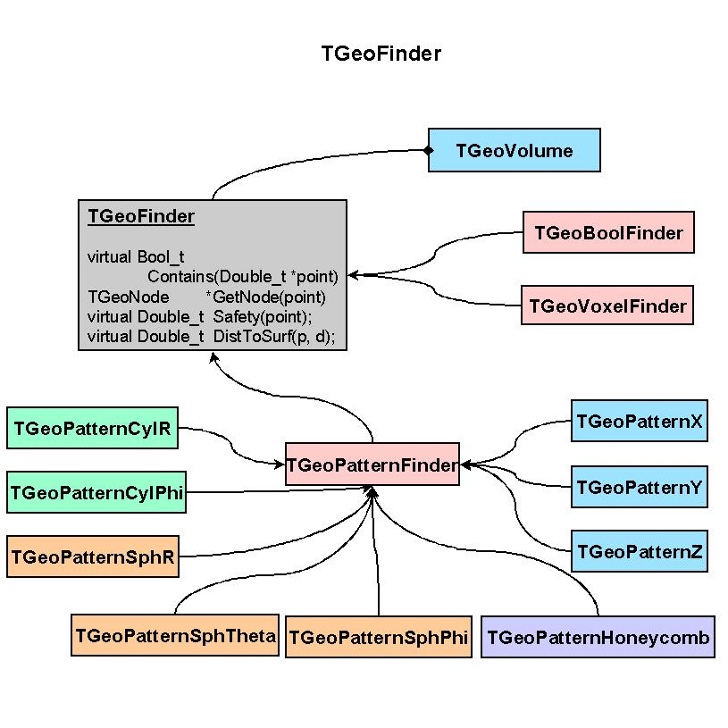
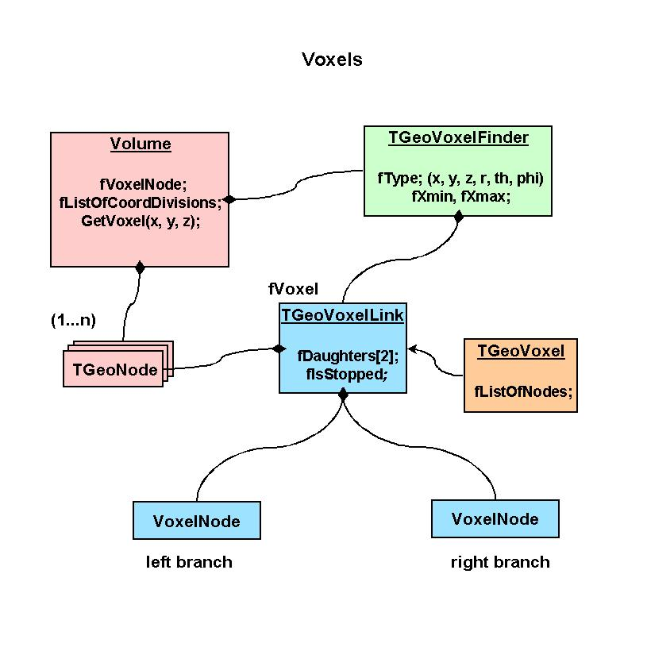
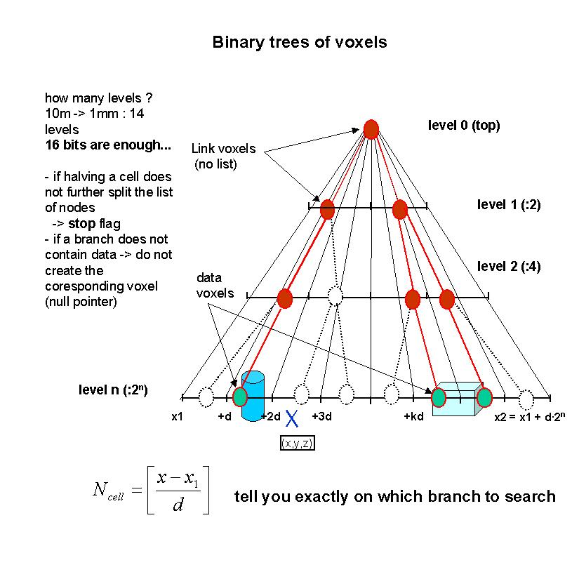
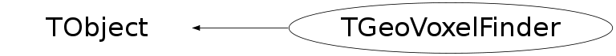

class TGeoVoxelFinder: public TObject
Full description with examples and pictures/*    */
Function Members (Methods)
public:
| TGeoVoxelFinder() | |
| TGeoVoxelFinder(TGeoVolume* vol) | |
| virtual | ~TGeoVoxelFinder() |
| void | TObject::AbstractMethod(const char* method) const |
| virtual void | TObject::AppendPad(Option_t* option = "") |
| virtual void | TObject::Browse(TBrowser* b) |
| static TClass* | Class() |
| virtual const char* | TObject::ClassName() const |
| virtual void | TObject::Clear(Option_t* = "") |
| void | ClearThreadData() const |
| virtual TObject* | TObject::Clone(const char* newname = "") const |
| virtual Int_t | TObject::Compare(const TObject* obj) const |
| virtual void | TObject::Copy(TObject& object) const |
| virtual void | CreateCheckList(Int_t tid = 0) |
| void | DaughterToMother(Int_t id, Double_t* local, Double_t* master) const |
| virtual void | TObject::Delete(Option_t* option = "")MENU |
| virtual Int_t | TObject::DistancetoPrimitive(Int_t px, Int_t py) |
| virtual void | TObject::Draw(Option_t* option = "") |
| virtual void | TObject::DrawClass() constMENU |
| virtual TObject* | TObject::DrawClone(Option_t* option = "") constMENU |
| virtual void | TObject::Dump() constMENU |
| virtual Double_t | Efficiency() |
| virtual void | TObject::Error(const char* method, const char* msgfmt) const |
| virtual void | TObject::Execute(const char* method, const char* params, Int_t* error = 0) |
| virtual void | TObject::Execute(TMethod* method, TObjArray* params, Int_t* error = 0) |
| virtual void | TObject::ExecuteEvent(Int_t event, Int_t px, Int_t py) |
| virtual void | TObject::Fatal(const char* method, const char* msgfmt) const |
| virtual TObject* | TObject::FindObject(const char* name) const |
| virtual TObject* | TObject::FindObject(const TObject* obj) const |
| virtual void | FindOverlaps(Int_t inode) const |
| Double_t* | GetBoxes() const |
| Int_t* | GetCheckList(Int_t& nelem, Int_t tid = 0) const |
| virtual Int_t* | GetCheckList(Double_t* point, Int_t& nelem, Int_t tid = 0) |
| virtual Option_t* | TObject::GetDrawOption() const |
| static Long_t | TObject::GetDtorOnly() |
| virtual const char* | TObject::GetIconName() const |
| virtual const char* | TObject::GetName() const |
| virtual Int_t* | GetNextCandidates(Double_t* point, Int_t& ncheck, Int_t tid = 0) |
| virtual Int_t* | GetNextVoxel(Double_t* point, Double_t* dir, Int_t& ncheck, Int_t tid = 0) |
| virtual char* | TObject::GetObjectInfo(Int_t px, Int_t py) const |
| static Bool_t | TObject::GetObjectStat() |
| virtual Option_t* | TObject::GetOption() const |
| TGeoVoxelFinder::ThreadData_t& | GetThreadData(Int_t tid = 0) const |
| virtual const char* | TObject::GetTitle() const |
| virtual UInt_t | TObject::GetUniqueID() const |
| virtual Bool_t | TObject::HandleTimer(TTimer* timer) |
| virtual ULong_t | TObject::Hash() const |
| virtual void | TObject::Info(const char* method, const char* msgfmt) const |
| virtual Bool_t | TObject::InheritsFrom(const char* classname) const |
| virtual Bool_t | TObject::InheritsFrom(const TClass* cl) const |
| virtual void | TObject::Inspect() constMENU |
| void | TObject::InvertBit(UInt_t f) |
| virtual TClass* | IsA() const |
| virtual Bool_t | TObject::IsEqual(const TObject* obj) const |
| virtual Bool_t | TObject::IsFolder() const |
| Bool_t | IsInvalid() const |
| Bool_t | TObject::IsOnHeap() const |
| Bool_t | IsSafeVoxel(Double_t* point, Int_t inode, Double_t minsafe) const |
| virtual Bool_t | TObject::IsSortable() const |
| Bool_t | TObject::IsZombie() const |
| virtual void | TObject::ls(Option_t* option = "") const |
| void | TObject::MayNotUse(const char* method) const |
| Bool_t | NeedRebuild() const |
| virtual Bool_t | TObject::Notify() |
| void | TObject::Obsolete(const char* method, const char* asOfVers, const char* removedFromVers) const |
| static void | TObject::operator delete(void* ptr) |
| static void | TObject::operator delete(void* ptr, void* vp) |
| static void | TObject::operator delete[](void* ptr) |
| static void | TObject::operator delete[](void* ptr, void* vp) |
| void* | TObject::operator new(size_t sz) |
| void* | TObject::operator new(size_t sz, void* vp) |
| void* | TObject::operator new[](size_t sz) |
| void* | TObject::operator new[](size_t sz, void* vp) |
| virtual void | TObject::Paint(Option_t* option = "") |
| virtual void | TObject::Pop() |
| virtual void | Print(Option_t* option = "") const |
| void | PrintVoxelLimits(Double_t* point) const |
| virtual Int_t | TObject::Read(const char* name) |
| virtual void | TObject::RecursiveRemove(TObject* obj) |
| void | TObject::ResetBit(UInt_t f) |
| virtual void | TObject::SaveAs(const char* filename = "", Option_t* option = "") constMENU |
| virtual void | TObject::SavePrimitive(ostream& out, Option_t* option = "") |
| void | TObject::SetBit(UInt_t f) |
| void | TObject::SetBit(UInt_t f, Bool_t set) |
| virtual void | TObject::SetDrawOption(Option_t* option = "")MENU |
| static void | TObject::SetDtorOnly(void* obj) |
| void | SetInvalid(Bool_t flag = kTRUE) |
| void | SetNeedRebuild(Bool_t flag = kTRUE) |
| static void | TObject::SetObjectStat(Bool_t stat) |
| virtual void | TObject::SetUniqueID(UInt_t uid) |
| virtual void | ShowMembers(TMemberInspector& insp) |
| virtual void | SortCrossedVoxels(Double_t* point, Double_t* dir, Int_t tid = 0) |
| virtual void | Streamer(TBuffer& b) |
| void | StreamerNVirtual(TBuffer& b) |
| virtual void | TObject::SysError(const char* method, const char* msgfmt) const |
| Bool_t | TObject::TestBit(UInt_t f) const |
| Int_t | TObject::TestBits(UInt_t f) const |
| virtual void | TObject::UseCurrentStyle() |
| virtual void | Voxelize(Option_t* option = "") |
| virtual void | TObject::Warning(const char* method, const char* msgfmt) const |
| virtual Int_t | TObject::Write(const char* name = 0, Int_t option = 0, Int_t bufsize = 0) |
| virtual Int_t | TObject::Write(const char* name = 0, Int_t option = 0, Int_t bufsize = 0) const |
protected:
Data Members
public:
| enum EVoxelsType { | kGeoInvalidVoxels | |
| kGeoRebuildVoxels | ||
| }; | ||
| enum TObject::EStatusBits { | kCanDelete | |
| kMustCleanup | ||
| kObjInCanvas | ||
| kIsReferenced | ||
| kHasUUID | ||
| kCannotPick | ||
| kNoContextMenu | ||
| kInvalidObject | ||
| }; | ||
| enum TObject::[unnamed] { | kIsOnHeap | |
| kNotDeleted | ||
| kZombie | ||
| kBitMask | ||
| kSingleKey | ||
| kOverwrite | ||
| kWriteDelete | ||
| }; |
protected:
| Double_t* | fBoxes | [fNboxes] list of bounding boxes |
| Int_t* | fExtraX | [fNex] indices of extra daughters in X slices |
| Int_t* | fExtraY | [fNey] indices of extra daughters in Y slices |
| Int_t* | fExtraZ | [fNez] indices of extra daughters in Z slices |
| Int_t | fIbx | number of different boundaries on X axis |
| Int_t | fIby | number of different boundaries on Y axis |
| Int_t | fIbz | number of different boundaries on Z axis |
| UChar_t* | fIndcX | [fNx] array of slices bits on X |
| UChar_t* | fIndcY | [fNy] array of slices bits on Y |
| UChar_t* | fIndcZ | [fNz] array of slices bits on Z |
| Int_t | fNboxes | length of boxes array |
| Int_t | fNex | length of array of X extra offsets |
| Int_t | fNey | length of array of Y extra offsets |
| Int_t | fNez | length of array of Z extra offsets |
| Int_t | fNox | length of array of X offsets |
| Int_t | fNoy | length of array of Y offsets |
| Int_t | fNoz | length of array of Z offsets |
| Int_t* | fNsliceX | [fNox] number of candidates in X slice |
| Int_t* | fNsliceY | [fNoy] number of candidates in Y slice |
| Int_t* | fNsliceZ | [fNoz] number of candidates in Z slice |
| Int_t | fNx | length of array of X voxels |
| Int_t | fNy | length of array of Y voxels |
| Int_t | fNz | length of array of Z voxels |
| Int_t* | fOBx | [fNox] offsets of daughter indices for slices X |
| Int_t* | fOBy | [fNoy] offsets of daughter indices for slices Y |
| Int_t* | fOBz | [fNoz] offsets of daughter indices for slices Z |
| Int_t* | fOEx | [fNox] offsets of extra indices for slices X |
| Int_t* | fOEy | [fNoy] offsets of extra indices for slices Y |
| Int_t* | fOEz | [fNoz] offsets of extra indices for slices Z |
| Int_t | fPriority[3] | priority for each axis |
| vector<ThreadData_t*> | fThreadData | ! |
| Int_t | fThreadSize | ! |
| TGeoVolume* | fVolume | volume to which applies |
| Double_t* | fXb | [fIbx] ordered array of X box boundaries |
| Double_t* | fYb | [fIby] ordered array of Y box boundaries |
| Double_t* | fZb | [fIbz] ordered array of Z box boundaries |
Class Charts
{kind=link}
{kind=link}
{kind=link}
{kind=link}

Function documentation
void ClearThreadData() const
Int_t GetNcandidates(Int_t tid = 0) const
Int_t* GetCheckList(Int_t& nelem, Int_t tid = 0) const
void DaughterToMother(Int_t id, Double_t* local, Double_t* master) const
convert a point from the local reference system of node id to reference system of mother volume
Bool_t IsSafeVoxel(Double_t* point, Int_t inode, Double_t minsafe) const
Computes squared distance from POINT to the voxel(s) containing node INODE. Returns 0 if POINT inside voxel(s).
void FindOverlaps(Int_t inode) const
create the list of nodes for which the bboxes overlap with inode's bbox
Int_t * GetExtraX(Int_t islice, Bool_t left, Int_t& nextra) const
--- Return the list of extra candidates in a given X slice compared to another (left or right)
Int_t * GetExtraY(Int_t islice, Bool_t left, Int_t& nextra) const
--- Return the list of extra candidates in a given Y slice compared to another (left or right)
Int_t * GetExtraZ(Int_t islice, Bool_t left, Int_t& nextra) const
--- Return the list of extra candidates in a given Z slice compared to another (left or right)
Int_t * GetValidExtra(Int_t* list, Int_t& ncheck, Int_t tid = 0)
Get extra candidates that are not contained in current check list UChar_t *bits = gGeoManager->GetBits();
Int_t * GetValidExtra(Int_t n1, UChar_t* array1, Int_t* list, Int_t& ncheck, Int_t tid = 0)
Get extra candidates that are contained in array1 but not in current check list UChar_t *bits = gGeoManager->GetBits();
Int_t * GetValidExtra(Int_t n1, UChar_t* array1, Int_t n2, UChar_t* array2, Int_t* list, Int_t& ncheck, Int_t tid = 0)
Get extra candidates that are contained in array1 but not in current check list UChar_t *bits = gGeoManager->GetBits();
Int_t * GetNextCandidates(Double_t* point, Int_t& ncheck, Int_t tid = 0)
Returns list of new candidates in next voxel. If NULL, nowhere to go next.
void SortCrossedVoxels(Double_t* point, Double_t* dir, Int_t tid = 0)
get the list in the next voxel crossed by a ray
Int_t * GetCheckList(Double_t* point, Int_t& nelem, Int_t tid = 0)
get the list of daughter indices for which point is inside their bbox
Int_t * GetVoxelCandidates(Int_t i, Int_t j, Int_t k, Int_t& ncheck, Int_t tid = 0)
get the list of candidates in voxel (i,j,k) - no check
Int_t * GetNextVoxel(Double_t* point, Double_t* dir, Int_t& ncheck, Int_t tid = 0)
get the list of new candidates for the next voxel crossed by current ray
printf("### GetNextVoxel\n");
Bool_t Intersect(Int_t n1, UChar_t* array1, Int_t& nf, Int_t* result)
return the list of nodes corresponding to one array of bits
Bool_t IntersectAndStore(Int_t n1, UChar_t* array1, Int_t tid = 0)
return the list of nodes corresponding to one array of bits
Bool_t Union(Int_t n1, UChar_t* array1, Int_t tid = 0)
make union of older bits with new array
printf("Union - one slice\n");
Bool_t Union(Int_t n1, UChar_t* array1, Int_t n2, UChar_t* array2, Int_t tid = 0)
make union of older bits with new array
printf("Union - two slices\n");
Bool_t Union(Int_t n1, UChar_t* array1, Int_t n2, UChar_t* array2, Int_t n3, UChar_t* array3, Int_t tid = 0)
make union of older bits with new array printf("Union - three slices\n"); printf("n1=%i n2=%i n3=%i\n", n1,n2,n3);
Bool_t Intersect(Int_t n1, UChar_t* array1, Int_t n2, UChar_t* array2, Int_t& nf, Int_t* result)
return the list of nodes corresponding to the intersection of two arrays of bits
Bool_t IntersectAndStore(Int_t n1, UChar_t* array1, Int_t n2, UChar_t* array2, Int_t tid = 0)
return the list of nodes corresponding to the intersection of two arrays of bits
Bool_t Intersect(Int_t n1, UChar_t* array1, Int_t n2, UChar_t* array2, Int_t n3, UChar_t* array3, Int_t& nf, Int_t* result)
return the list of nodes corresponding to the intersection of three arrays of bits
Bool_t IntersectAndStore(Int_t n1, UChar_t* array1, Int_t n2, UChar_t* array2, Int_t n3, UChar_t* array3, Int_t tid = 0)
return the list of nodes corresponding to the intersection of three arrays of bits
void Voxelize(Option_t* option = "")
Voxelize attached volume according to option If the volume is an assembly, make sure the bbox is computed.
ThreadData_t& GetThreadData(Int_t tid = 0) const